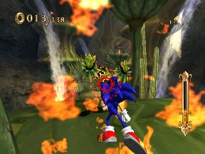
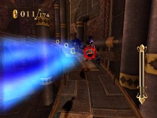

Going for the Gold part2
Advanced Tactics
Effective Skills for Gold Medals by Mission Type
Below is a summary of effective skills and tips for each of the common mission types.
“Defeat Enemies” missions
The key is to defeat enemies as quickly as possible.
Equipping attack-type skills like Fire Gaze, Fire Tackle and Volcano Slider is good, but focusing on upgrading the Homing Attack with skills like Rocket Jump, H-Mega Expand and Homing Recovery may be more helpful in cutting your time.

“Don’t defeat enemies” missions
Defeating an enemy will result in immediate failure, so avoid any attack-type skills. Instead, consider Aegis Slider so you can get by enemies without taking damage or losing time.
Also, since there’s no need to lock on to enemies, you don’t need any H Expand-type skills. And if you start a Homing Attack by mistake, use Homing Cancel.
Learn enemy positions, and figure out a route that will allow you to avoid them most efficiently.

“Don’t get defeated” missions
Simply taking damage won’t result in failure, so clearing the mission shouldn’t be too difficult. Taking damage takes up time, though, so you will need to play like the “don’t defeat enemies” and “don’t take damage” missions.
In these missions, of course, you can defeat enemies, so in some cases you can get a better overall time by spending some time to defeat enemies and collect Pearls.
As far as skills go, you can do fairly well with the recommended skills above.

“Collect Rings” missions
As mentioned earlier, equipping Ring Bonus to start the mission with Rings is almost a requirement to get a better time.
Making sure you don’t miss any Rings is a no-brainer, but in some cases, it may be faster to go out of your way to pick up Rich Rings (worth 20 Rings), so learn where they are.

“Beat Uhu to the goal” missions
Since you need to beat Uhu by a wide margin to earn the Gold Medal, you don’t need to worry about Uhu too much. Instead, equip the recommended skills and use Speed Break effectively on the straight-aways to get a shorter time.
The number on the upper right shows the distance between Sonic and the Uhu. When playing this mission repeatedly, you can use this number to give you an idea of your time.


Super Play
SKELETON DOME
Rampage! "Defeat 40 Genies!"
Try delaying the swinging timing of the controller by consecutively doing a homing attack.
Then, defeat the enemies by first locking-on the enemies in the close range in the outer part of the screen and then defeat the enemies in the farther distance.
« Going for the Gold part1 | Advanced Tactics | Going for the Gold part3 »
 RSS
RSS